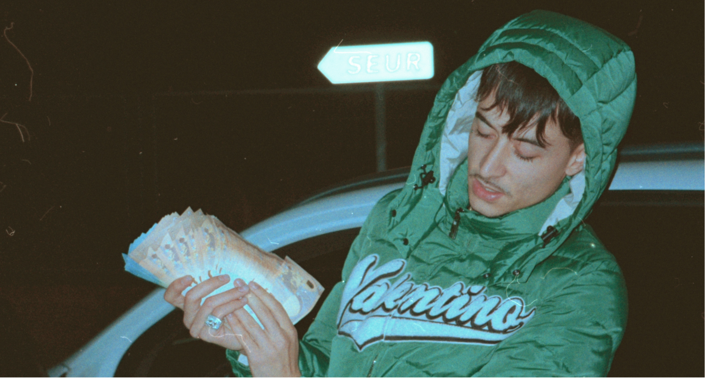
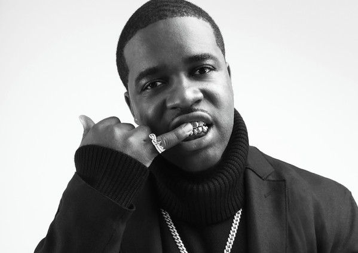

¡ATENCION!
Los generos son una descripción para conocer más acerca de los estilos mas trabajados, pero los beats pueden no tener genero o ser una combinacion de varios.
BOOM BAP | RAP
Experiencia en estilos Old School, Grimmey, Hardcore, G-funk y Drumless. Con el rap es con lo que empece a producir ❤

DETROIT
Ritmos rapidos, solidos y simples. Type Beats de artistas como Gloosito, BFB Da Packman, Rio Da Yung OG.

TRAP
Type Beats de artistas como Travis Scott, los ASAP, Migos, Duki, YSY A, Pablo Chill-e, Eladio Carrion.
REGGAETON
Type Beats de artistas como Feid, Rauw Alejandro, Jhay Cortez. Tambien estilos como Neo Perreo, Malianteo y RKT.
PLUGG
Sub-genero del trap creado por MexikoDro con "vibes chill", sonidos brillosos, un estilo suave cargado de synths y pads.

DRILL
Estilos oscuros, callejeros. Artistas como Pop Smoke, Chief Keef, NLE Choppa incursionarion en este mutacion del trap.